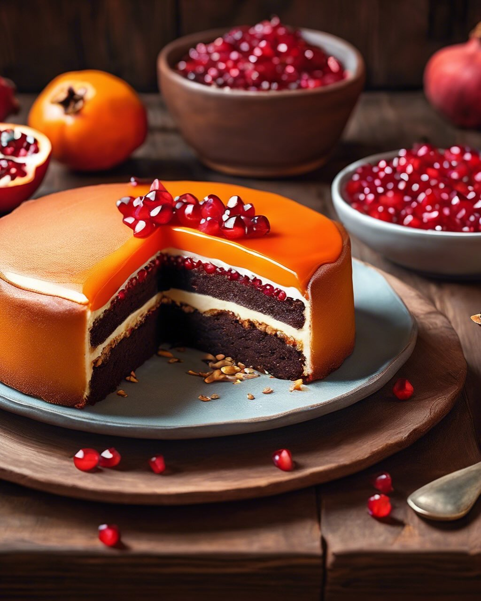

Ricette di stagione a base di legumi

📅 6 Novembre 2024
La farina di carrube conferisce un gusto rustico e leggermente dolciastro alla torta. Perfetta per chi cerca alternative al cacao tradizionale.
📅 November 6, 2024
Carob flour gives a rustic and slightly sweet flavour to the cake. Perfect for those looking for alternatives to traditional cocoa.
📅 6 de Noviembre de 2024
La harina de algarroba aporta un sabor rústico y ligeramente dulce a la tarta. Perfecta para quien busca alternativas al cacao tradicional.
📅 6 de Novembro de 2024
A farinha de alfarroba confere um sabor rústico e ligeiramente doce ao bolo. Perfeita para quem procura alternativas ao cacau tradicional.
📅 7. November 2024
Johannisbrotmehl verleiht dem Kuchen einen rustikalen und leicht süßlichen Geschmack. Perfekt für alle, die nach Alternativen zu traditionellem Kakao suchen.
📅 6 Νοεμβρίου 2024
Το αλεύρι χαρουπιού προσδίδει στο κέικ μια ρουστίκ και ελαφρώς γλυκιά γεύση. Ιδανικό για όσους αναζητούν εναλλακτικές στο παραδοσιακό κακάο.